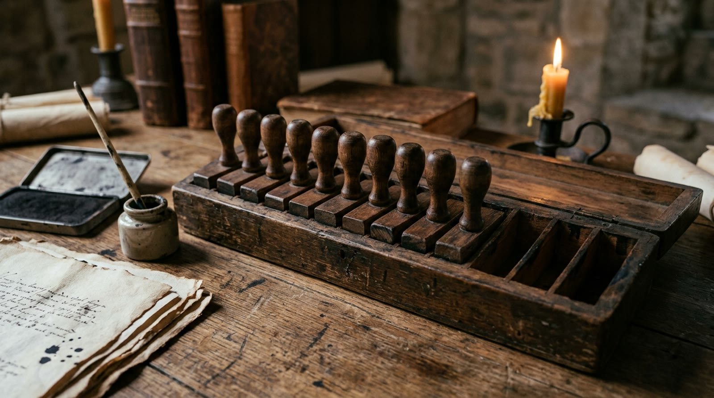
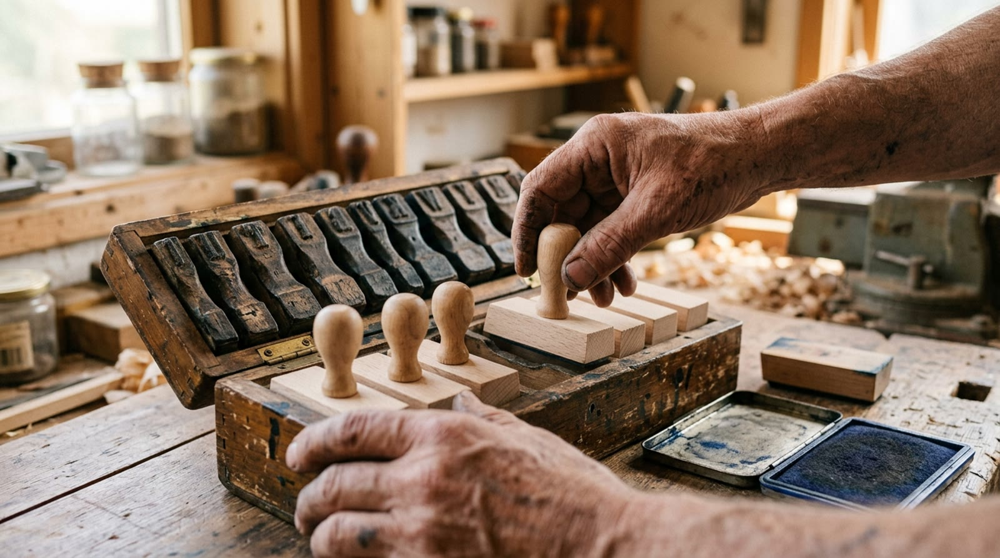
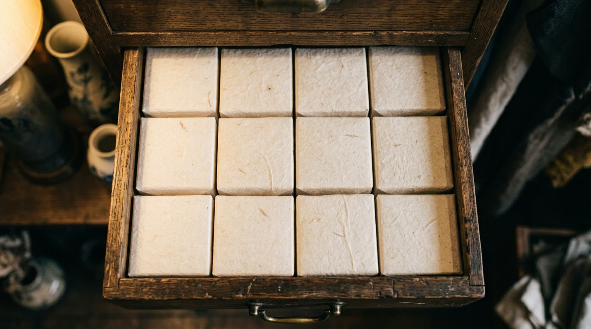
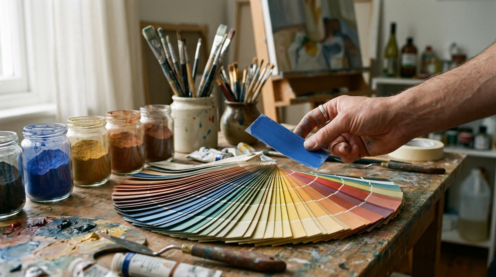

extra 05 · fora da linha do tempo
O Sistema Hexadecimal
Depois do 9, dá pra continuar contando sem subir de casa? Dá — desde que existam mais algarismos. Este extra apresenta o sistema que conta até quinze num desenho só, e mostra por que o grupo de dezesseis não é capricho. Avance apertando Próximo.
o problema · os desenhos acabam no 9
Dez carimbos só

reconstituição realista · não é fotografia de época
a solução · pegar emprestado
As letras viram algarismos

contando: … 8, 9, A, B, C, D, E, F — e SÓ no F a casa enche
demonstração · contando com dezesseis algarismos
Deixa contar
Aperte começar e repare no que acontece depois do 9 — e no que só acontece depois do F.
0
no 9 → A não sobe nada: a casa ainda tem seis algarismos de folga. O vai-um só chega no F — por isso os números ficam mais curtos
a escada · a casa vale dezesseis
Uma gaveta guarda dezesseis

reconstituição realista · não é fotografia de época
demonstração · por que logo dezesseis?
Quatro sim-ou-nãos, um rótulo
Clique nas lâmpadas e repare no rótulo.
dezesseis é 2×2×2×2: cada combinação de quatro sim-ou-nãos ganha um rótulo EXATO — nem sobra, nem falta. É por isso que essa base existe: ela é apelido de grupo de quatro
no dia a dia · a cor da tela
O tal do FF6B35

aparece também em endereço de rede e etiqueta de equipamento — sempre que se quer escrever MUITO em pouco espaço
demonstração · lendo um número de dezesseis
O 2A por dentro
2A parece senha, mas é um número. Aperte lê e desmonte ele.
é a mesma leitura do 42 de todo dia: casa multiplica, algarismo conta — só muda o tamanho do grupo
sua vez · três números
Carimbe você
Monte o número clicando nos algarismos.
0
o 26 e o 42 obrigam o A na casa do um; o 240 pede o F na casa do dezesseis
o fecho · por que dezesseis?
O apelido de grupo de quatro
o tamanho certo
16 = 2×2×2×2: um algarismo carrega exatamente quatro respostas de sim-ou-não, nem mais nem menos. O dez não consegue esse encaixe — o grupo fecharia sempre errado.
o preço
Letra no meio do número assusta: 2A parece código secreto, mas é só "duas gavetas e dez soltos" = 42. O que estranha é o costume; a regra é a mesma de sempre.
onde a analogia quebra
O armário para nas gavetas: gaveta de verdade não faz vai-um sozinha, e a base dezesseis não substitui a de dez — ela é um jeito compacto de escrever, apelido e não idioma novo. E de onde vêm os tais sim-ou-nãos que ela resume… rende outra conversa.